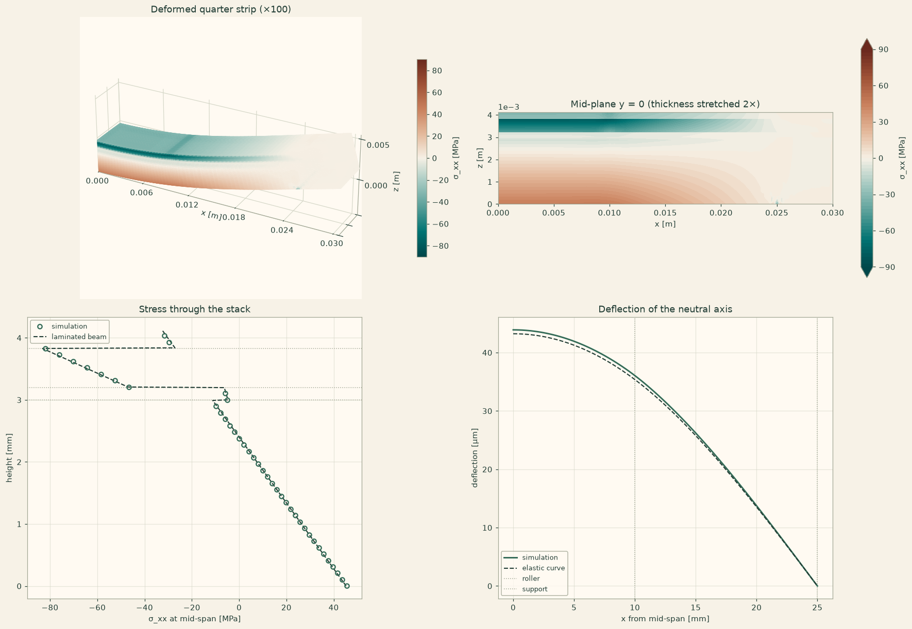
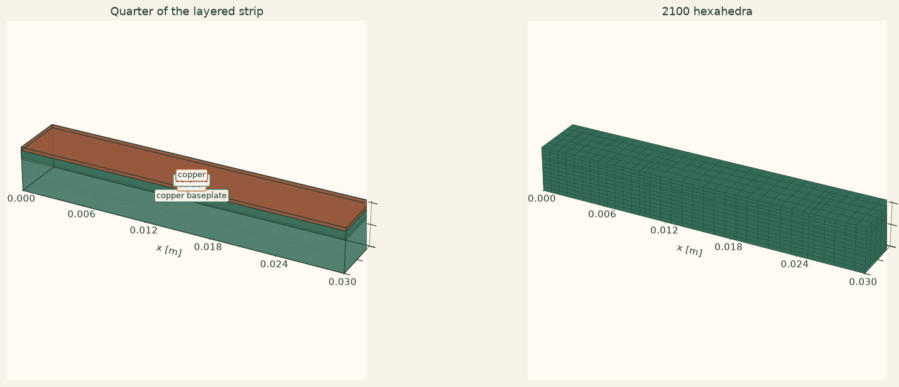

Docs › Examples › Four-point bending test of a layered module
Structural mechanics · 3D
Four-point bending test of a layered module
A strip of a power-electronics module (copper baseplate, solder, alumina substrate, copper layer) in the four-point bending test: the stress in every layer between the rollers.

What it computes
OneSimulation reads the quarter strip and its three layer regions from STEP files, meshes them with hexahedra that follow every layer interface and solves 3D linear elasticity with symmetry planes, a line support and a roller pressure. The script that builds the STEP file comes with the notebook.
What it checks
At mid-span the bending stress at the layer interfaces agrees with laminated beam theory within -1.5 % to +3.9 % (45.5 MPa at the bottom of the baseplate against 45.3 MPa, -81.9 MPa on top of the ceramic against -83.1 MPa), the curvature between the rollers within -0.53 % and the mid-span deflection of 43.9 µm with the elastic curve within +1.5 %.
Geometry
The notebook starts at the import of the CAD files four_point_bending_layered_module.step, four_point_bending_layered_module_ceramic.step, four_point_bending_layered_module_copper.step, four_point_bending_layered_module_solder.step: STEP (AP242), readable by any CAD program, with the names of the faces that the boundary conditions use. Put them next to the notebook.

The geometry script
The script four_point_bending_layered_module_geometry.py builds the geometry with the CAD objects of OneSimulation and writes the files. Change a dimension there, run it, and run the notebook again.
"""Geometry of the OneSimulation example "Four-point bending of a layered power module".
Builds one quarter of the layered strip (30 mm half length, 5 mm half width, 4.13 mm thick) with
the CAD objects of OneSimulation and writes four_point_bending_layered_module.step; its faces keep
the names x_min, x_max, y_min, y_max, z_min and z_max. The solder, ceramic and top copper layers,
which mark the regions of the other materials, are written to
four_point_bending_layered_module_solder.step, ..._ceramic.step and ..._copper.step.
"""
from onesim.cad.d3 import Box
half_length, half_width = 0.030, 0.005
layers = {"baseplate": 3.0e-3, "solder": 0.2e-3, "ceramic": 0.63e-3, "copper": 0.3e-3}
strip = Box(length=half_length, width=half_width, height=sum(layers.values()))
strip.save("four_point_bending_layered_module.step")
bottom = layers["baseplate"]
for name in ("solder", "ceramic", "copper"):
Box(
length=half_length,
width=half_width,
height=layers[name],
origin=(0.0, 0.0, bottom),
).save(f"four_point_bending_layered_module_{name}.step")
bottom += layers[name]The notebook
The complete notebook, cell by cell. Run it to produce the figures and the comparison printout.
The four-point bending test is a standard reliability test for electronic packages: two supports below and two load rollers above leave the span between the rollers under a constant bending moment, free of shear force, so every layer of the stack sees a clean, known stress. Here a 60 mm × 10 mm strip of a power module is tested: a thick copper baseplate, a solder layer, an alumina substrate of the direct-bonded-copper type and its top copper layer.
| layer (bottom to top) | thickness | \(E\) | \(\nu\) | |---|---|---|---| | copper baseplate | 3.0 mm | 120 GPa | 0.34 | | solder (SnAgCu) | 0.2 mm | 50 GPa | 0.36 | | alumina ceramic | 0.63 mm | 370 GPa | 0.22 | | copper top layer | 0.3 mm | 120 GPa | 0.34 |
Support span \(L=50\) mm, roller span 20 mm, so the rollers sit \(a=15\) mm inside the supports; total load \(F=200\) N, \(P=F/2\) per roller.
The strip is symmetric about both mid-planes, so one quarter is modelled. It comes from the CAD file four_point_bending_layered_module.step with the face names x_min ... z_max; the files ..._solder.step, ..._ceramic.step and ..._copper.step mark the regions of the other materials. The script four_point_bending_layered_module_geometry.py writes all four.
| face | condition | |---|---| | x_min, y_min (mid-planes) | symmetry: \(u_x=0\), \(u_y=0\) | | z_min along the support line \(x=L/2\) | \(u_z=0\) | | z_max under the roller, 1 mm wide at \(x=10\) mm | pressure, resultant \(P\) | | all other faces | traction free |
Reference. Between the rollers the moment is \(M=Pa\). Laminated beam theory with the transformed section (Timoshenko & Gere, Mechanics of Materials, composite beams) puts the neutral axis at \(z_n=\sum E_it_iz_i/\sum E_it_i\) and gives the bending stiffness, the curvature and the stress in layer \(i\),
and the elastic curve of the four-point bending beam gives the mid-span deflection \(\delta=Pa(3L^2-4a^2)/(24\,EI)\).
from dataclasses import replace
import numpy as np
from onesim.cad.d2 import Plane
from onesim.cad.exchange import load
from onesim.materials import IsotropicSolid
from onesim.meshing import Piecewise, StructuredHexahedralMesher, Uniform
from onesim.numerics import Numerics
from onesim.numerics.fem import FiniteElement, Lagrange
from onesim.numerics.linear import SparseDirect
from onesim.physics.solid_mechanics import (
FixedDisplacementComponents,
LinearElasticity,
Traction,
TractionFree,
)
from onesim.simulation import Problem, Simulation, regionwise
from onesim.visualization import plots, theme
theme.set()Geometry and mesh
load returns the quarter strip and the three layer regions. The hexahedra follow every interface, put nodes on the support line and resolve the 1 mm roller strip.
strip = load("four_point_bending_layered_module.step")
regions = {
name: load(f"four_point_bending_layered_module_{name}.step")
for name in ("solder", "ceramic", "copper")
}
faces = strip.boundaries
half_length, half_width, thickness = strip.size
along = Piecewise(
(
(0.0095, Uniform(12)),
(0.001, Uniform(2)),
(0.014, Uniform(14)),
(0.001, Uniform(2)),
(0.0045, Uniform(5)),
)
)
across = Piecewise(
(
(0.003, Uniform(8)),
(0.0002, Uniform(1)),
(0.00063, Uniform(2)),
(0.0003, Uniform(1)),
)
)
mesh = StructuredHexahedralMesher(
cells=(35, 5, 12), grading=(along, Uniform(5), across)
).generate(strip)
view = plots.Camera(elevation=28, azimuth=-62)
fig = plots.figure(1, 2, size=(15, 5.5))
plots.geometry(
[
strip.named("copper baseplate"),
*(region.named(name) for name, region in regions.items()),
],
camera=view,
title="Quarter of the layered strip",
ax=fig[0],
)
plots.mesh(
mesh,
groups=("all",),
legend=False,
camera=view,
title=f"{mesh.cell_count} hexahedra",
ax=fig[1],
)
plots.show()Model
Elastic constants per layer through regionwise; quadratic hexahedra.
layers = {
"baseplate": (3.0e-3, 120e9, 0.34),
"solder": (0.2e-3, 50e9, 0.36),
"ceramic": (0.63e-3, 370e9, 0.22),
"copper": (0.3e-3, 120e9, 0.34),
}
force, support, roller, strip_width = 200.0, 0.025, 0.010, 0.001
layered = lambda index, unit: regionwise(
tuple((region, layers[name][index]) for name, region in regions.items()),
default=layers["baseplate"][index],
unit=unit,
)
material = replace(
IsotropicSolid(
density=8000.0,
specific_heat_capacity=400.0,
thermal_conductivity=100.0,
youngs_modulus=1e9,
poisson_ratio=0.3,
thermal_expansion_coefficient=1e-5,
),
youngs_modulus=layered(1, "Pa"),
poisson_ratio=layered(2, "1"),
)
pressure = force / 4 / (strip_width * half_width)
model = LinearElasticity(domain=strip.volume, material=material)
problem = Problem(
name="Four-point bending",
geometry=strip,
physics=(model,),
boundary_conditions=(
FixedDisplacementComponents(
boundary=faces.x_min, physics=model, components=("x",)
),
FixedDisplacementComponents(
boundary=faces.y_min, physics=model, components=("y",)
),
FixedDisplacementComponents(
boundary=faces.z_min,
physics=model,
components=("z",),
where={"z": lambda x, y, z: np.abs(x - support) < 1e-7},
),
Traction(
boundary=faces.z_max,
physics=model,
value=lambda x, y, z: np.stack(
(
0 * x,
0 * x,
np.where(
np.abs(x - roller) < strip_width / 2 + 1e-9, -pressure, 0.0
),
),
axis=-1,
),
),
TractionFree(boundary=faces.x_max | faces.y_max, physics=model),
),
)
numerics = Numerics(
spatial=FiniteElement(element=Lagrange(order=2)), linear_solver=SparseDirect()
)
result = Simulation(problem=problem, mesh=mesh, numerics=numerics).solve_stationary()
displacement, stress = result.field(model.displacement), result.field(model.stress)Results
The transformed section of the stack, the stress through the layers at mid-span, the curvature fitted to the deflection between the rollers and the mid-span deflection.
thick, moduli = np.array([t for t, _, _ in layers.values()]), np.array(
[e for _, e, _ in layers.values()]
)
tops = np.cumsum(thick)
centres = tops - thick / 2
neutral = (moduli * thick) @ centres / (moduli @ thick)
bending_stiffness = (
2 * half_width * moduli @ (thick**3 / 12 + thick * (centres - neutral) ** 2)
)
moment, span, arm = force / 2 * (support - roller), 2 * support, support - roller
curvature = moment / bending_stiffness
laminate = lambda z: moduli[np.searchsorted(tops, z)] * curvature * (neutral - z)
elastic_curve = (
lambda s: force
/ 2
* np.where(
s < arm,
s * (3 * span * arm - 3 * arm**2 - s**2),
arm
* (
3 * span * np.minimum(s, span - s)
- 3 * np.minimum(s, span - s) ** 2
- arm**2
),
)
/ (6 * bending_stiffness)
)
points = {
"bottom of the baseplate": 1e-6,
"top of the baseplate": tops[0] - 1e-6,
"bottom of the ceramic": tops[1] + 1e-6,
"top of the ceramic": tops[2] - 1e-6,
"top of the copper layer": tops[3] - 1e-6,
}
at_mid_span = stress.evaluate([[1e-6, 1e-6, z] for z in points.values()])[:, 0]
x = np.linspace(0, roller - strip_width, 25)
inner = displacement.evaluate(
np.column_stack((x, np.full_like(x, 1e-6), np.full_like(x, neutral)))
)[:, 2]
fitted = 2 * np.polyfit(x, inner, 2)[0]
x_line = np.linspace(0, support, 101)
line = displacement.evaluate(
np.column_stack((x_line, np.full_like(x_line, 1e-6), np.full_like(x_line, neutral)))
)[:, 2]
seat = line[-1]
print(
f"neutral axis {1e3 * neutral:.3f} mm above the bottom, bending stiffness {bending_stiffness:.4f} N m²"
)
print(
f"{'position at mid-span':26s} simulation [MPa] laminated beam [MPa] deviation"
)
for (label, z), value in zip(points.items(), at_mid_span):
print(
f"{label:26s} {value / 1e6:16.2f} {laminate(z) / 1e6:22.2f} {100 * (value / laminate(z) - 1):+10.2f} %"
)
print(
f"curvature between the rollers: simulation {fitted:.5f} 1/m, laminated beam {curvature:.5f} 1/m, "
f"deviation {100 * (fitted / curvature - 1):+.2f} %"
)
print(
f"mid-span deflection relative to the supports: simulation {1e6 * (seat - line[0]):.2f} µm, elastic curve "
f"{1e6 * elastic_curve(support):.2f} µm, deviation {100 * ((seat - line[0]) / elastic_curve(support) - 1):+.2f} %"
)Figure
The axial stress on the deformed quarter strip (displacement magnified 100 times) and in its mid-plane, the stress through the stack at mid-span, and the deflection along the strip.
z = np.linspace(1e-6, thickness - 1e-6, 400)
through = stress.evaluate(
np.column_stack((np.full_like(z, 1e-6), np.full_like(z, 1e-6), z))
)[:, 0]
axial_stress = lambda s, position: s[:, 0] / 1e6
fig = plots.figure(2, 2, size=(16, 11))
plots.surface(
stress,
component=axial_stress,
deformation=displacement,
deformation_scale=100.0,
colormap="diverging",
limits=(-90, 90),
camera=view,
label="σ_xx [MPa]",
title="Deformed quarter strip (×100)",
ax=fig[0],
)
plots.section(
stress,
plane=Plane(origin=(0, 1e-6, 0), normal=(0, 1, 0)),
component=axial_stress,
colormap="diverging",
limits=(-90, 90),
subdivisions=3,
aspect=2.0,
xlimits=(0.0, 0.030),
label="σ_xx [MPa]",
title="Mid-plane y = 0 (thickness stretched 2×)",
xlabel="x [m]",
ylabel="z [m]",
ax=fig[1],
)
plots.line(
points={"simulation": (through[::10] / 1e6, 1e3 * z[::10])},
reference={"laminated beam": (laminate(z) / 1e6, 1e3 * z)},
hlines=list(1e3 * tops[:3]),
xlabel="σ_xx at mid-span [MPa]",
ylabel="height [mm]",
title="Stress through the stack",
legend="upper left",
ax=fig[2],
)
plots.line(
1e3 * x_line,
{"simulation": 1e6 * (seat - line)},
reference={"elastic curve": 1e6 * elastic_curve(support - x_line)},
vlines={"roller": 1e3 * roller, "support": 1e3 * support},
xlabel="x from mid-span [mm]",
ylabel="deflection [µm]",
title="Deflection of the neutral axis",
legend="lower left",
ax=fig[3],
)
plots.show()Going further
Make the ceramic thicker or the baseplate thinner in the geometry script, write the files again and watch the neutral axis move into the ceramic; add the chips on top as further layer regions, or cool the stack from the soldering temperature first to add the residual thermal stresses.